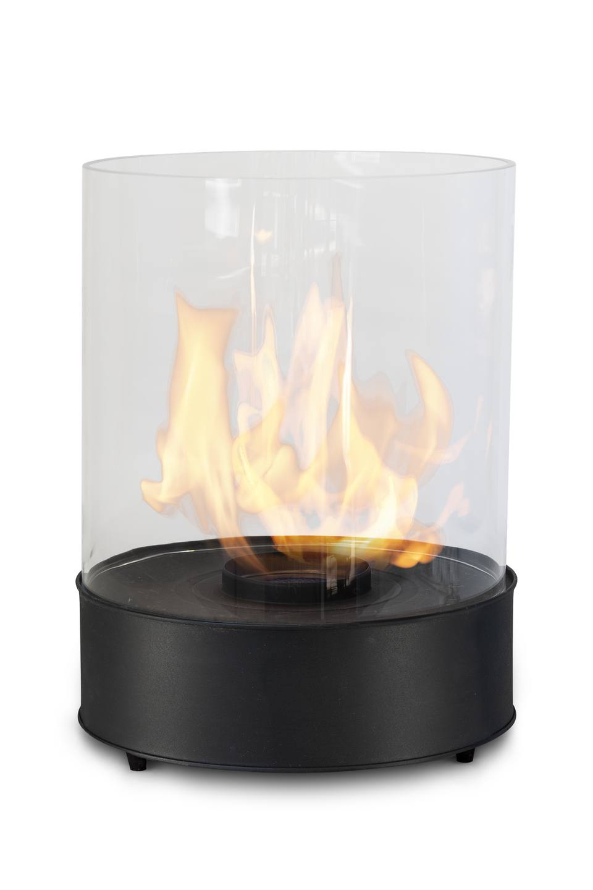

CHANTICO GLASSFIRE MAKES STAYING AT HOME MORE ENJOYABLE
Chantico Glassfire is a table top
bioethanol
fireplace for
indoor
and
outdoor
use. It can be set on a side table or centrally to create a warm, loving atmosphere in your living room or terrace. It is an easy way to achieve relaxed atmosphere whether you are alone or with your family.
Clean Burning in Harmony with Nature
Bioethanol is the cleanest fuel of plant origin - in the burning process only CO2 in the amount comparable to levels exhaled by a human is produced

SAFE & EASY TO USE
Commerce Technology keeps the device safe by keeping the fuel inside the base container without the possibility of spillage.
Technical information
- [ØxH] 251 x 361 mm - [ØxH] 9 ⁷/₈” x 14 ³/₁₆”
- 2.0kg / 4.4 lbs
- Burning time about 3.5 hours
- Ethanol consumption : about 0.43 L / hour
- Heat output: 2.5 kW
MAKE SOMEONE HAPPY, SHOW THAT YOU CARE
CHANTICO GLASSFIRE IS A PERFECT GIFT IDEA
While the world has stopped for a moment and we are separated, we can still show affection through meaningful gifts. Chantico Glassfire is a ready-to-use kit that will be delivered to the indicated address. Think how much warmth Chantico Glassfire will bring to the lives of your loved ones.